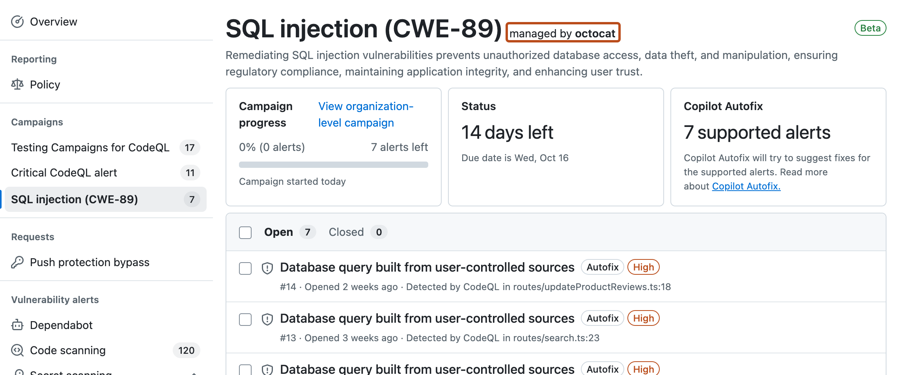

Learn how to find and fix alerts in a security campaign.
When a campaign targets security alerts in a repository that you have write access to, you can navigate to the list of repository alerts in the campaign.
This view shows the alerts in the current repository for a campaign called "SQL injection (CWE-89)" (highlighted gray) that is managed by "octocat" (outlined in dark orange).

If you want to see the code that triggered the security alert and the suggested fix, click on the alert name to show the alert view.
When you are ready to work on one or more security alerts, check that no one else is working on those alerts already. In the campaign view, git icons are displayed on alerts where a fix may already be in progress. Click an icon to display the linked work:
In the campaign view for the repository, select the alerts that you want to fix.
Connect the security alerts to a working branch:
When you have finished fixing the alerts and testing your solutions, create a pull request for your changes and request a review from the campaign manager.
Tip
If you have write permission for more than one repository in the campaign, click the link in the "Campaign progress" box in your repository to show the organization-level view of the campaign. When you open a repository from this view, the campaign alerts view is displayed.
Note
This option is currently in public preview and is subject to change. Copilot cloud agent must be available in the repository.
If an autofix has been generated, you can assign one or more alerts to Copilot. Copilot will create pull requests, apply the autofixes, and add you as a requested reviewer.
By assigning multiple alerts, Copilot cloud agent will apply the fixes and iterate on the code to validate the changes, check for any new security issues, and ensure there are no merge conflicts.
Within 30 seconds, Copilot will open a pull request to address the security vulnerabilities assigned to Copilot and yourself. The pull request will include a summary of the fixes and details of the changes made. Once created, the pull request is shown next to the alert.
If you have access to Copilot Chat then you can ask the AI questions about the vulnerability, the suggested fix, and how to test that the fix is comprehensive.
Tip
Copilot's ability to answer natural language questions like these in a repository context is optimized when the semantic code search index for the repository is up to date. For more information, see Indexing repositories for GitHub Copilot.